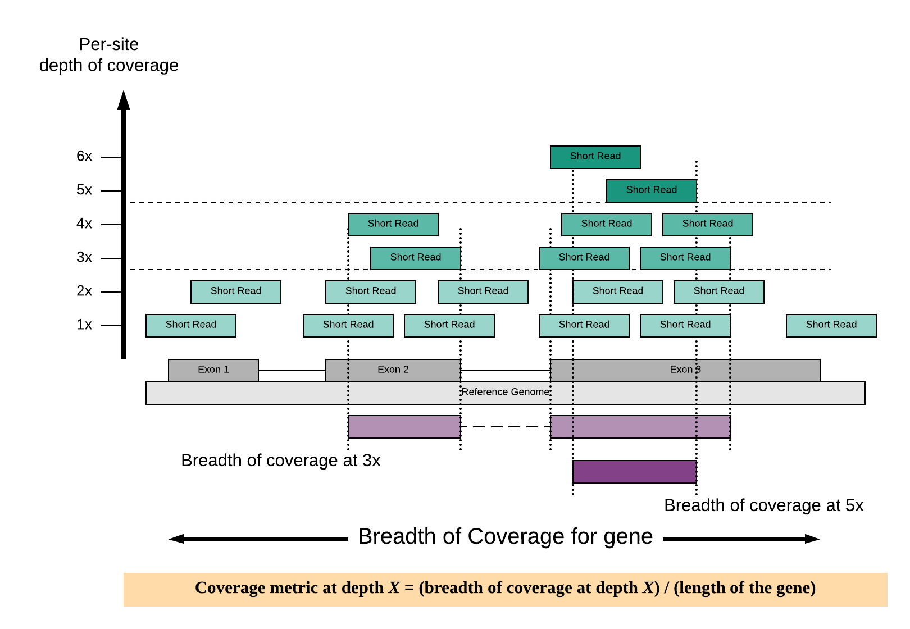

1. Introduction¶
WEScover provides an interface where users can search genes of interest according to phenotypes, targeted gene panel tests, or gene symbols to check for breadth of coverage across whole exome sequencing (WES) datasets. Breadth of coverage refers to the proportion of gene that is covered at a minimum per-site read depth (e.g., x10, x20 or x30), the average number of times a given region has been sequenced by independent reads. Breadth of coverage data were calculated for each gene from exomes in the 1000 Genomes Project (1KGP) mapped to the human reference genome GRCh38. Users may check for genes related to phenotype of interest and determine whether they could be comprehensively covered by WES instead of targeted gene panel testing. Conversely, if candidate genes have a mean breadth of coverage lower than 95% in population scale WES datasets then targeted gene panel testing should be considered to minimize potential false negatives. This user guide provides an overview of WEScover.
{kind=link}